Interactive Trade Show Stations
A family of three interactive systems created for repeated deployment across multiple power and grid industry trade shows. The work combined spatial design, digital interfaces, construction documentation and fabrication.
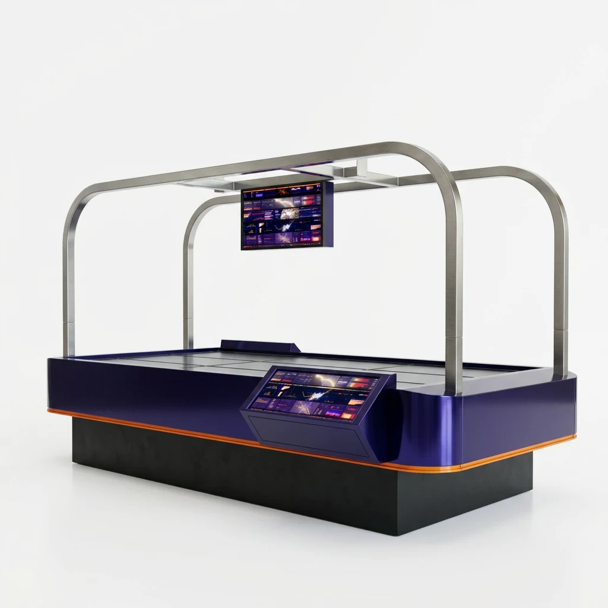
Three interactions, one visual system
The project required three distinct visitor experiences to read as one coordinated family. Each station uses the same material language, rounded geometry and integrated display hardware while responding to a different type of interaction.
The systems were developed for use on two or more trade show floors, so durability, assembly, hardware access and repeat deployment were part of the design problem from the beginning.
Interactive Table
A large interactive table with an integrated touch interface and overhead display. The station acts as a central gathering point while keeping technology, structure and cable routing contained within one freestanding object.
Interactive Wall
A large format digital wall designed as a focused visual and interactive moment. The enclosure integrates the display hardware into a durable architectural object rather than treating the screen as an added component.
Journey Game
A multi station visitor sequence beginning at a sign in station, continuing through three playable stations and ending at a results station. The physical stations support both individual interaction and a clear progression through the experience.
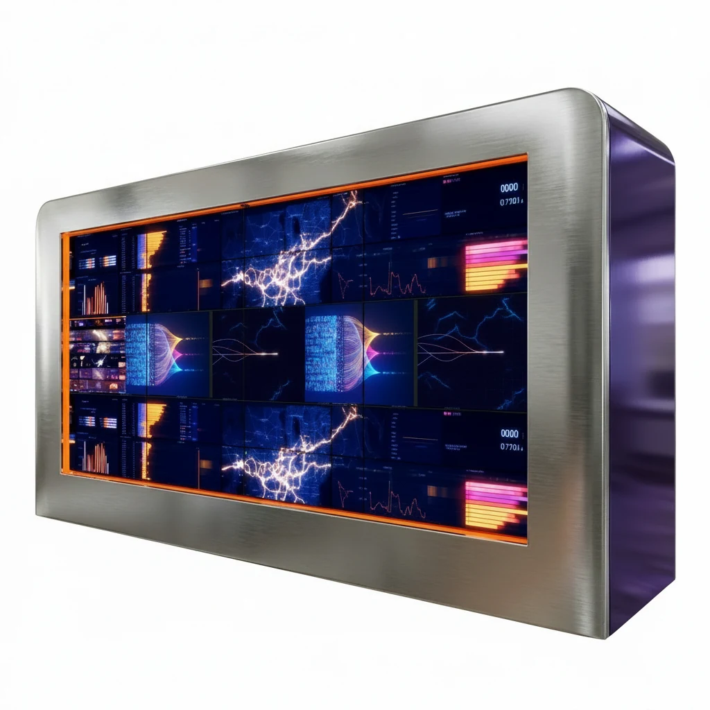
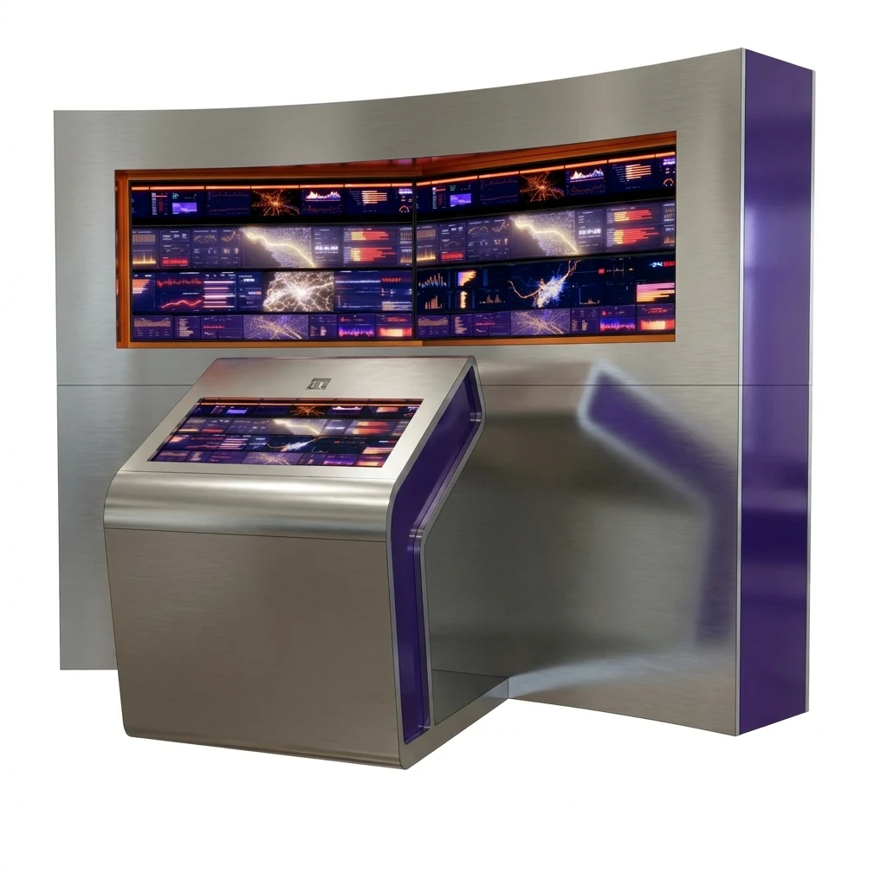
Experience planning across the show floor
The stations were developed as part of a larger visitor experience rather than as isolated objects. Early studies tested how digital content, physical models, visitor circulation and floor graphics could work together across different booth footprints.
The interactive table became a shared exploration surface, while the journey experience organized multiple play points into a clear sequence that could adapt to more than one trade show layout.
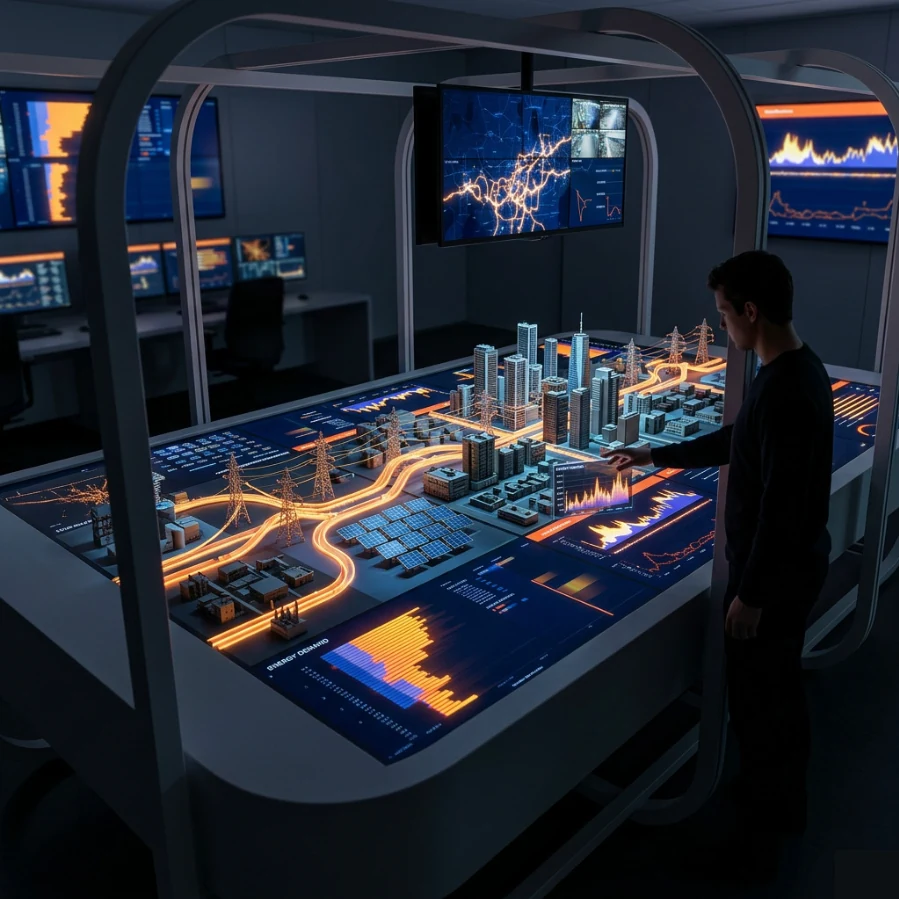
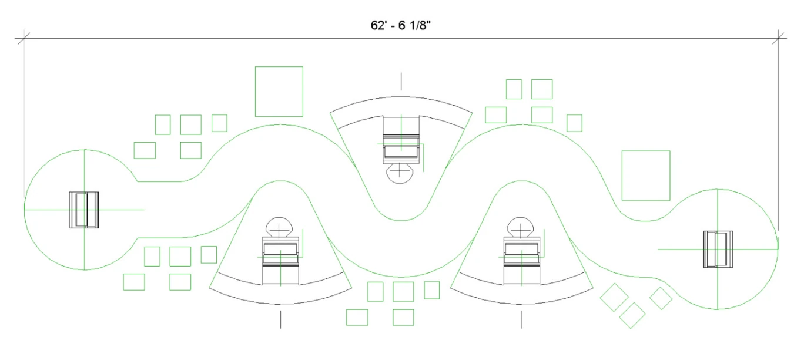
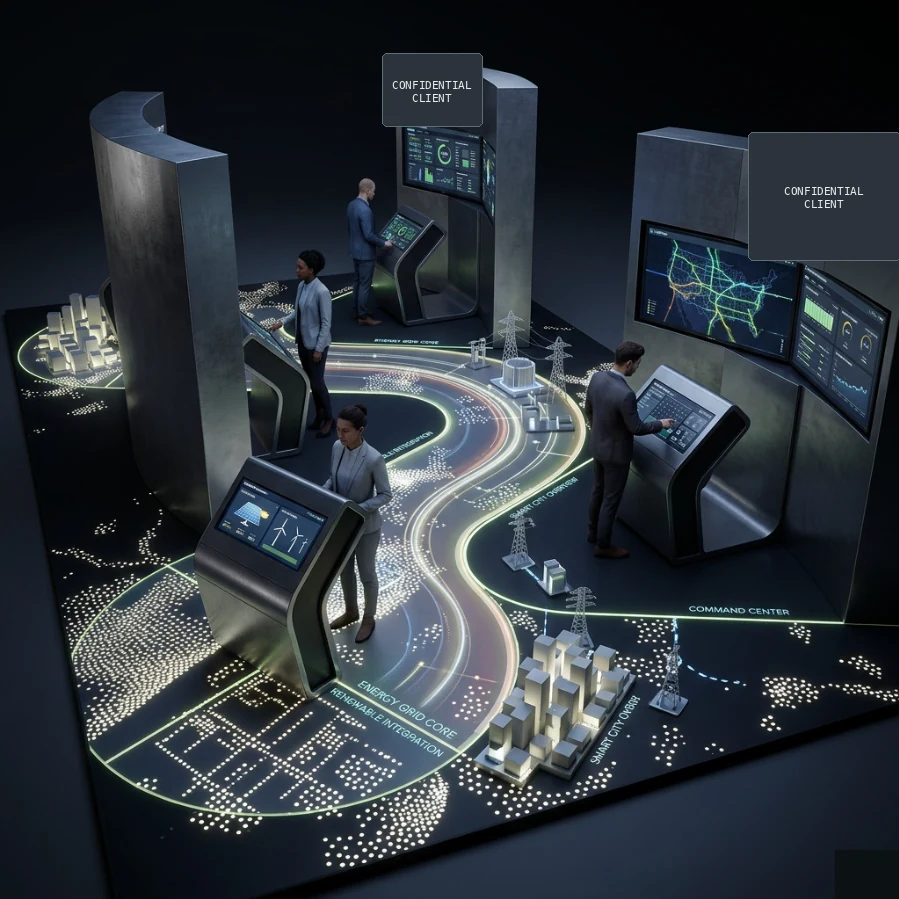
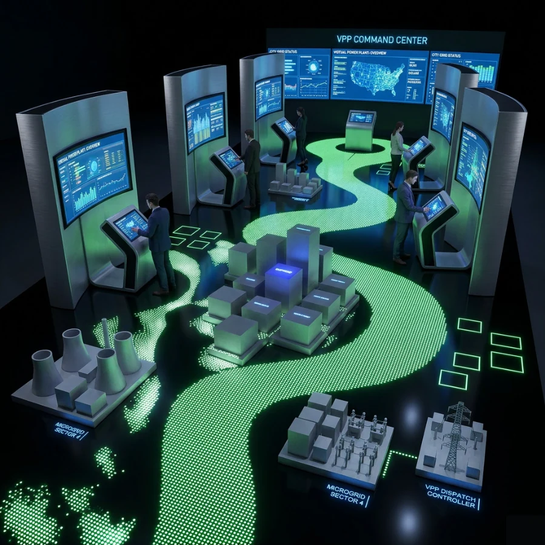
From design intent to fabrication
The stations were developed beyond visualization. Construction documentation defined geometry, finishes and assembly requirements, then the work continued into fabrication coordination and shop floor review.
The interactive table became a particularly useful test of the design system. Its curved perimeter, integrated screen housing and repeated access openings required close coordination between the digital experience, architectural shell and fabricated plywood substrate.
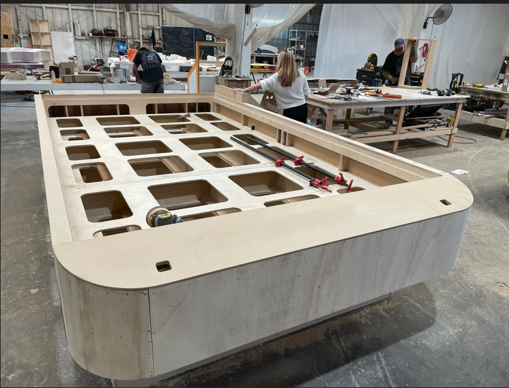
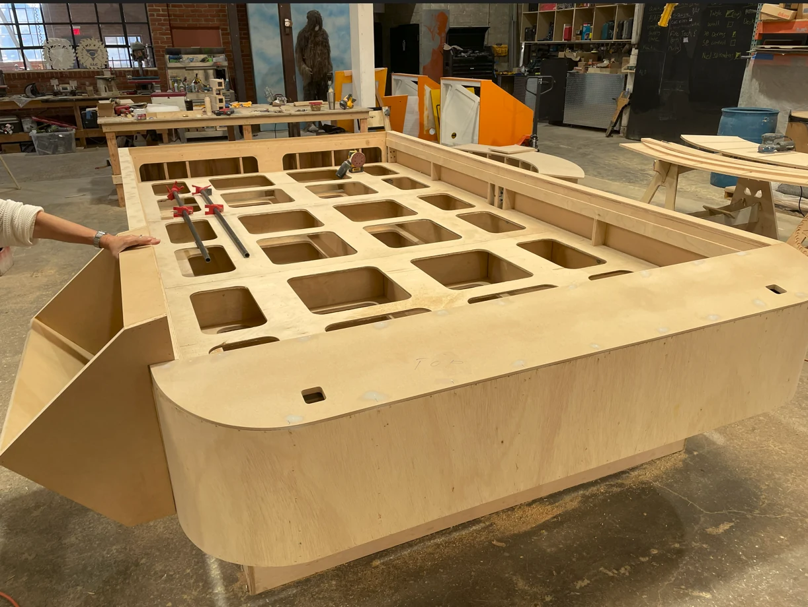
Built for repeat deployment
The project was conceived as a reusable kit of interactive environments rather than a one time exhibit. Each station balances visual identity, integrated technology, access for maintenance and the practical realities of fabrication, transport, installation and repeated use.
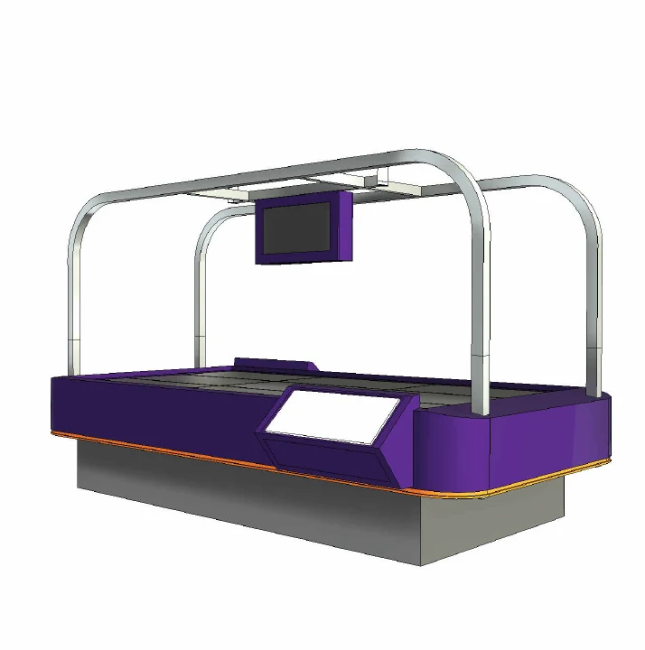
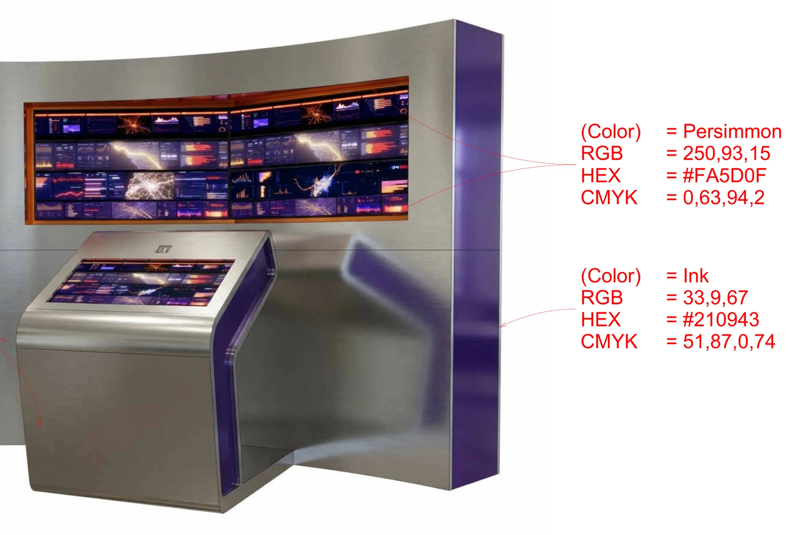
Client name, logos and identifying brand information are intentionally omitted. Images are presented to document the design, fabrication and interaction strategy only.